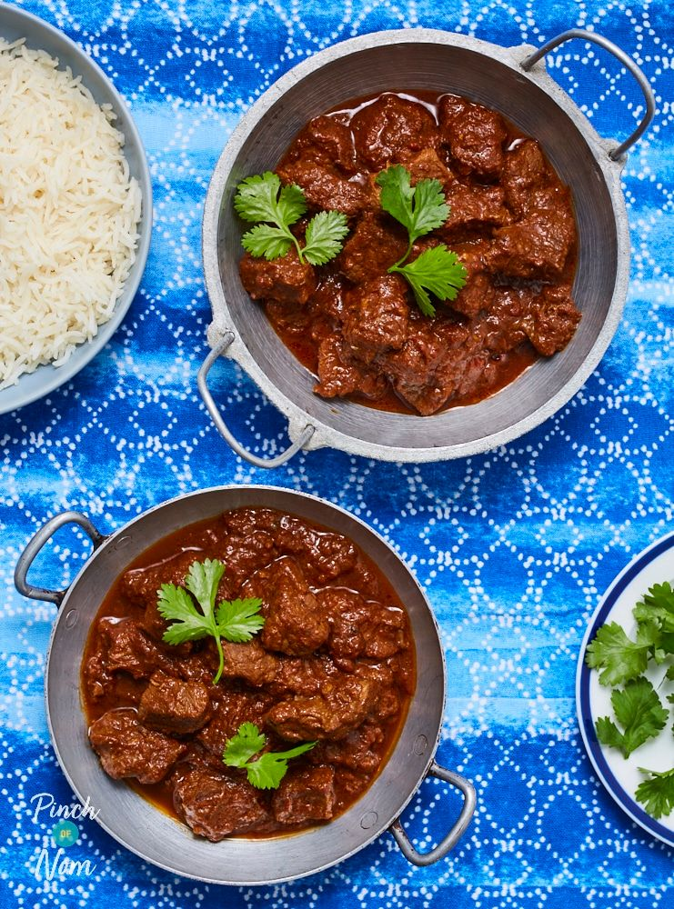

Beef Madras

Description
If replacing beef, consider lamb. If using a 'white' meat, consider whether the meat will get more tough if cooked for longer.
This recipe describes using a heavy pot which will be transferred to the oven. It is possible to not need the oven, and cook on the stove top.
Ingredients (4 portions)
- 600g of diced beef
- 2 to 4 bay leaves
- 1 tbsp of madras curry powder (adjust to taste)
- 1 large onion - grated
- 1 large carrot - grated (optional)
- 1 thumb size piece of ginger - grated
- 2 whole red chillies, halved (deseeded if desired)
- 3 cloves of garlic - crushed
- 1 tsp ground corriander
- 500ml passata
- 500 ml beef stock
- 2 tbsp ghee (or oil)
Steps
- Allow beef to come to room temparature, and season well.
- Whilst oven is pre-heating, add a small amount of oil to a heavy pot and brown off the beef in batches on a medium to high heat.
- Set beef aside, retain any 'juices' for the stock, and add 1 tbsp oil to the pot and turn heat to low and allow it to heat gently.
- Once the oil is warmed, add the grated onion, carrot, ginger, and garlic, and sweat the contents.
- At this stage pre-heat the oven (if using) to 140c (fan) or 160c (conventional).
- As the ingredients start to soften and the sugars are released, add the chillis and turn up the heat a small amount.
- Continue to cook for a few minutes, stirring continuously, then add ground corriander and the madras powder.
- If the mixture is dry add a splash of water and coat all ingredients in the spices.
- Add the last tbsp of ghee or oil and reintroduce the beef, coating it well.
- Once the beef is coated, add all other ingredients (stock, passata, bay leaves) and turn up the heat.
- Once the mixture is just ready to 'bubble', take off the heat, cover and place in the oven.
- Cook for at least 45 minutes, allowing the sauce to thicken.
- Serve as intended, garnished with fresh corriander and chilli slices.